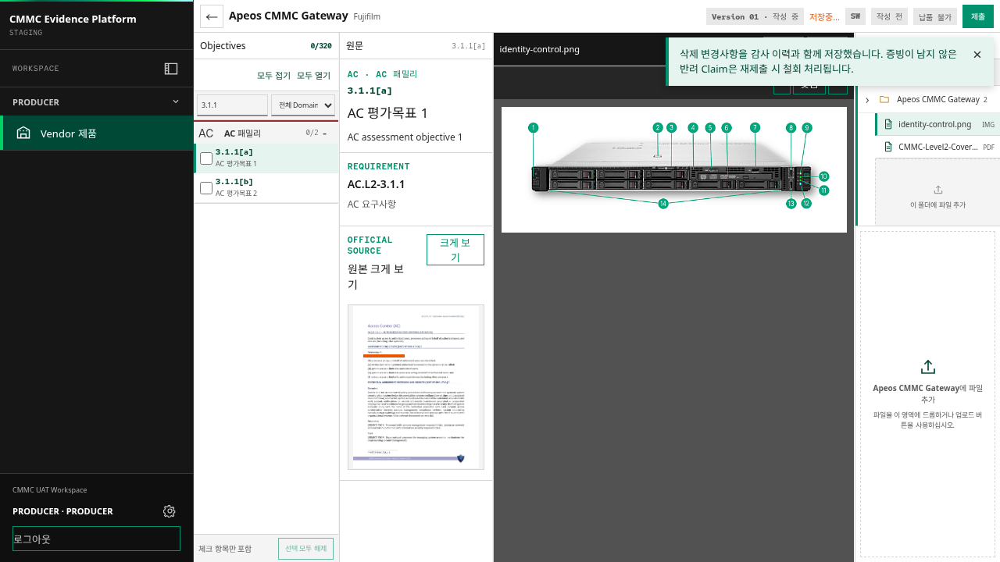
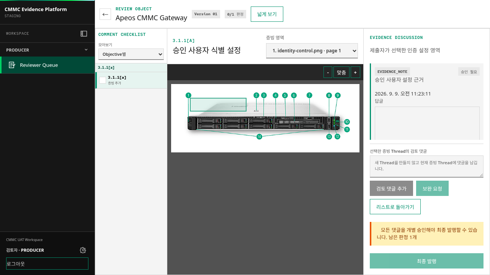
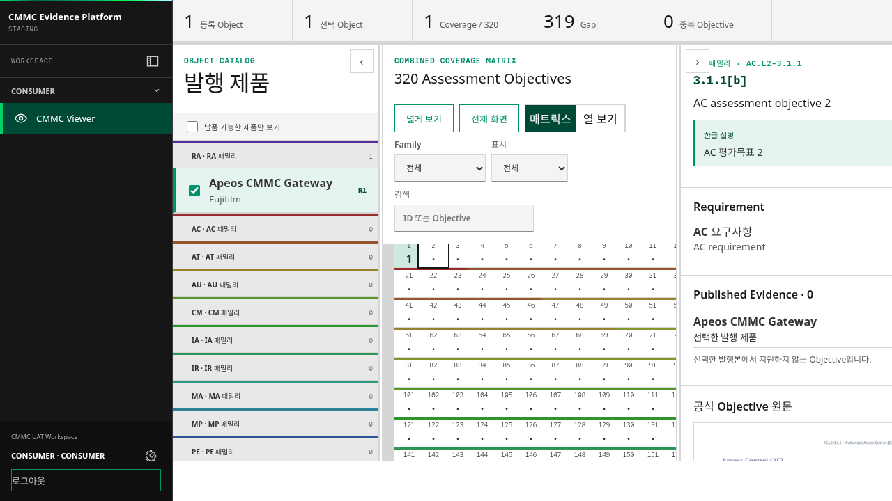
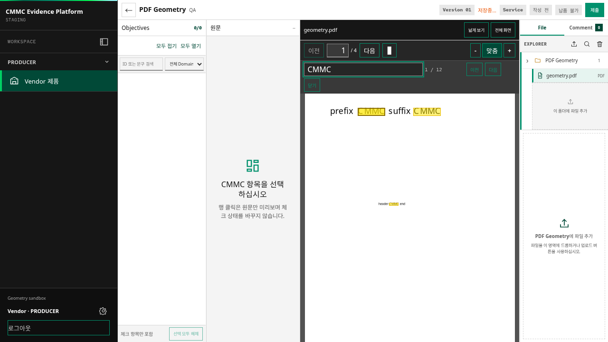

사업 흐름의 공백WHY
- 컨설팅사는 고객 환경에서 개선이 필요한 CMMC 항목을 도출한다.
- FBKR은 그 결과를 공급 가능한 제품, 사양, 구축·운영 조건으로 연결해야 한다.
- 하나의 Objective에 여러 제품과 운영 절차가 함께 필요할 수 있다.
- 버전·라이선스·설정에 따라 제품의 지원 범위가 달라진다.
CMMC Level 2 대응을 위해 제품의 기능, 공식 문서, 적용 조건, 검토 결과를 하나의 흐름으로 연결했다. 이 문서는 제품 선정·사양 검토 역할이 어떻게 조직의 재사용 가능한 Evidence Platform 요구사항으로 확장됐는지 설명한다.
1차 단일 HTML Coverage Viewer를 거쳐 2차 다중 사용자 Evidence Platform을 구현하고 staging에 배포했다. 다음 과제는 실제 제품·컨설팅·납품 흐름에 적용해 자산화 효과를 확인하는 것이다.
컨설팅 진단을 실제 제품 선정과 구축으로 연결하려면, 요구사항 번호만으로는 부족하다. 제품 기능, 공식 근거, 고객 환경의 운영 증적을 분리해서 확인하고 다시 연결해야 한다.
Objective 번호만 전달되면 어떤 제품을 제안해야 하는지, 기능을 어떤 공식 문서로 설명해야 하는지, 고객 환경에서 남는 Gap이 무엇인지 바로 판단하기 어렵다.
제품의 기능 근거와 고객사의 실제 준수·운영 증적은 같은 것으로 취급하지 않고, 서로 연결하되 별도로 관리해야 한다.
TFT에서 맡은 기본 역할은 제품 선정 및 사양 검토였다. 반복되는 조사와 설명을 조직의 공통 자산으로 바꾸기 위해, 검토 가능한 구조와 업무 흐름까지 정의했다.
고객 요구와 CMMC Objective를 기준으로 HW·SW·Service 후보를 좁힌다.
제품 기능, 적용 조건, 버전·라이선스 범위를 공식 자료와 대조한다.
Claim, 원문, 문서 버전, 페이지와 Evidence Anchor를 연결한다.
제출·검토·보완·발행·버전 관리가 같은 기준으로 반복되도록 요구사항을 만든다.
처음에는 중앙 협업 기능보다, 제품과 CMMC 평가항목의 연결을 한 화면에서 탐색할 수 있는 단일 HTML Viewer에 집중했다.
개인 환경에서의 탐색은 가능했지만, 여러 사용자가 같은 데이터를 보고 제출·검토하려면 중앙 데이터, 역할별 권한, 보완 루프와 발행본이 필요했다.
“보여주는 Viewer”에서 “검토하고 발행하는 Platform”으로 개발 범위가 바뀌었다.
Viewer의 탐색 경험을 유지하면서 중앙 DB, 인증, 업무 권한과 검토·발행 절차를 추가했다. 현재 구현 및 staging 배포가 완료된 실제 운영 기반이다.
제품과 근거를 등록하고 검토를 요청한다.
원문·적용 조건·Claim을 대조하고 보완 또는 승인한다.
권한 범위 안에서 검토 완료된 발행본을 조회한다.
계정·권한·조직·위임과 감사 기록을 관리한다.




아래 화면은 실제 프론트엔드에서 1280×720(16:9) 비율로 렌더링된 자료다. Admin은 계정·권한·위임·감사 기능을 중심으로 설명하고, 전용 캡처가 확보되면 같은 화면 자료 영역에 추가한다.
제품 등록 → 자료 확보 → 근거 연결 → 제출 → 검토 → 보완 또는 최종 승인 → 발행. 보완이 필요하면 제출자가 수정한 뒤 같은 검토 절차로 재제출한다.
제품 파일을 올리는 행위와 증빙을 제출하는 행위, 검토 완료본을 발행하는 행위는 서로 다른 상태 변화다. 이 셋을 분리해야 기존 발행본을 보존하면서 자료를 계속 축적할 수 있다.
활성 제품에는 검토·발행 상태와 관계없이 공식 자료를 추가할 수 있다. 업로드만으로 제출이나 새 발행본이 만들어지지는 않는다.
자료를 실제 증빙으로 사용하려면 Objective와 연결하고, 추가 근거·연결 삭제 요청도 검토 대상으로 만든다.
최종 승인 시 승인된 변경을 반영한 Snapshot을 생성한다. 일반 수정은 기존 발행본을 덮어쓰지 않는다.
제품 기능을 설명하는 문서와 정확한 근거 위치가 연결되어야 검토자와 협력사가 같은 자료를 다시 확인할 수 있다.
DOCX 변환 결과의 원본 배치 재현성은 문서별 차이가 있다. 원문 보존, 변환 품질, 조회 성능을 함께 확인하며 지속 개선 대상으로 관리한다.
브라우저·애플리케이션·데이터의 경계를 분리하고, 브라우저는 같은 사이트의 API만 호출하도록 구성했다. 배포는 GitHub Actions를 통해 반복 가능하게 만들었다.
제품 근거와 검토 결과가 조직 자산이 될수록, 누구를 들일지와 무엇을 할 수 있는지를 분리해 판단해야 한다.
허용된 이메일 사용자가 사이트에 진입하도록 제한한다.
등록·활성화된 사용자 계정으로 업무 기능에 접근한다.
역할·조직·Workspace·소유 관계와 배정 조건에 따라 데이터 접근과 작업 범위를 제한한다.
원문과 변환 산출물은 비공개로 보관하고 주요 변경·판정의 처리 주체와 과정을 남긴다.
기능 목록보다 중요한 것은 근거가 어디서 왔고, 어떤 검토를 통과했으며, 누구에게 어떤 발행본으로 제공되는지 설명할 수 있는가이다.
제품의 지원 설명에서 공식 원문과 정확한 근거 위치까지 추적한다.
검토 완료본을 발행 시점의 Snapshot으로 보존한다.
검증·발행 데이터 생성·현재 발행본 전환을 하나의 transaction으로 처리한다.
추가·변경된 근거도 동일한 제출·검토 절차를 거쳐 새 버전에 반영한다.
권한 범위 안에서 팀이 같은 기준과 발행 결과를 확인한다.
제품 Capability와 공식 근거는 고객사의 실제 준수·운영 증적과 구분해 관리한다.
CMMC Evidence Platform의 실제 화면과 주요 동작 흐름을 영상으로 확인한다.
플랫폼 개발은 제품 선정 업무를 대체하기 위한 것이 아니라, 판단 근거를 반복해서 사용할 수 있는 조직 자산으로 만드는 작업이다.
내 역할은 “제품을 고르는 사람”에 머물지 않고, 제품의 기능과 공식 근거를 검토 가능한 형태로 만들고, 팀이 같은 발행 결과를 재사용하도록 하는 기준을 정의하는 일로 확장됐다.